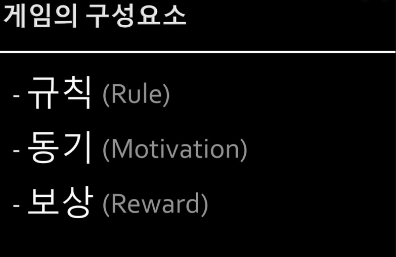
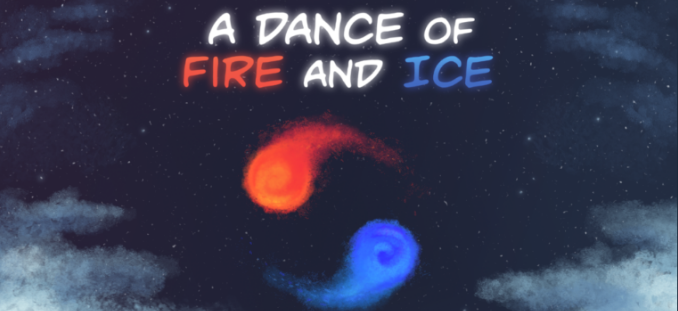
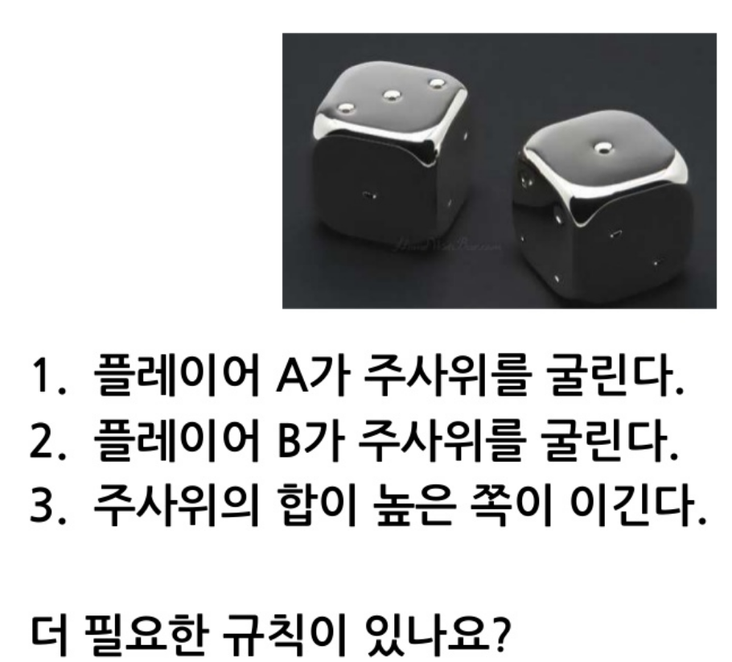
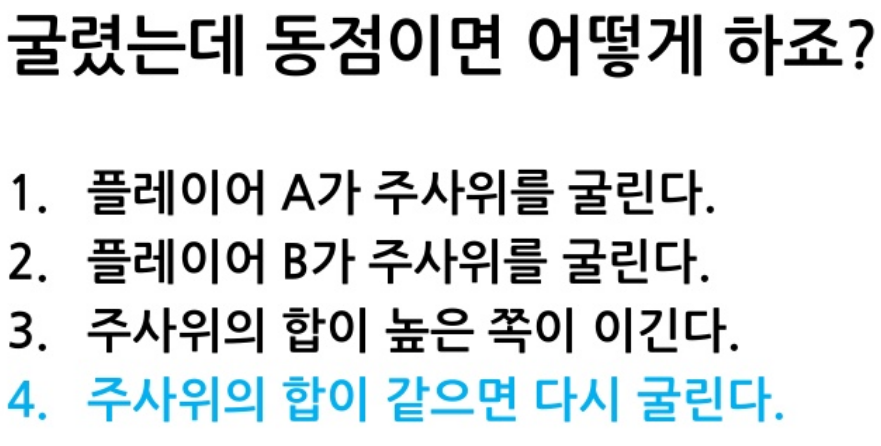
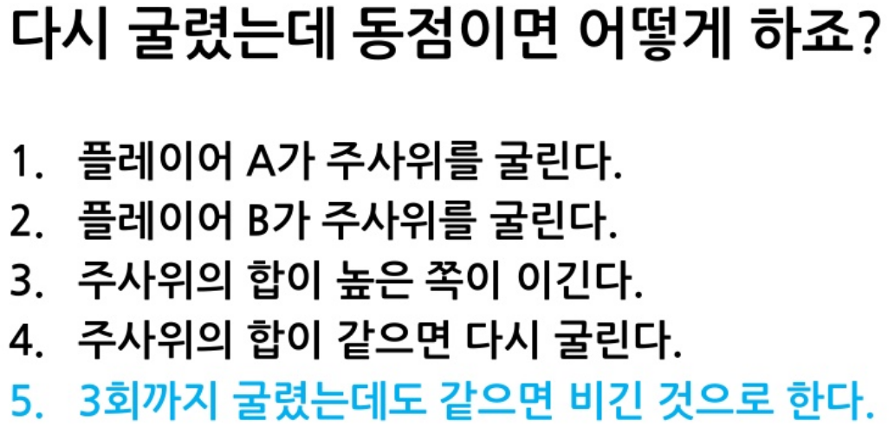
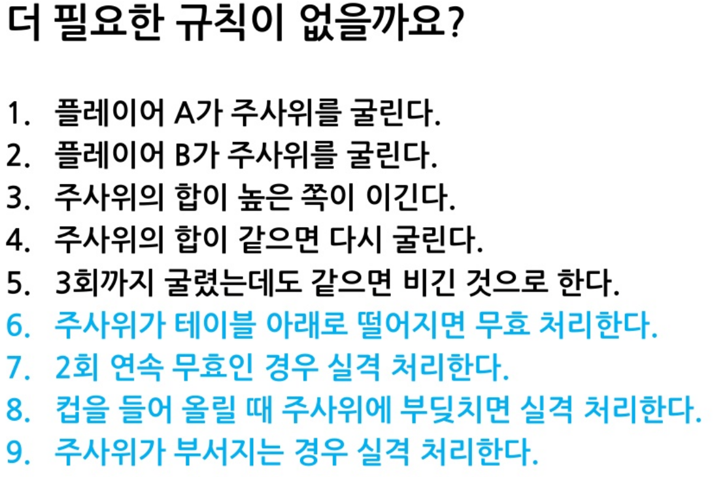
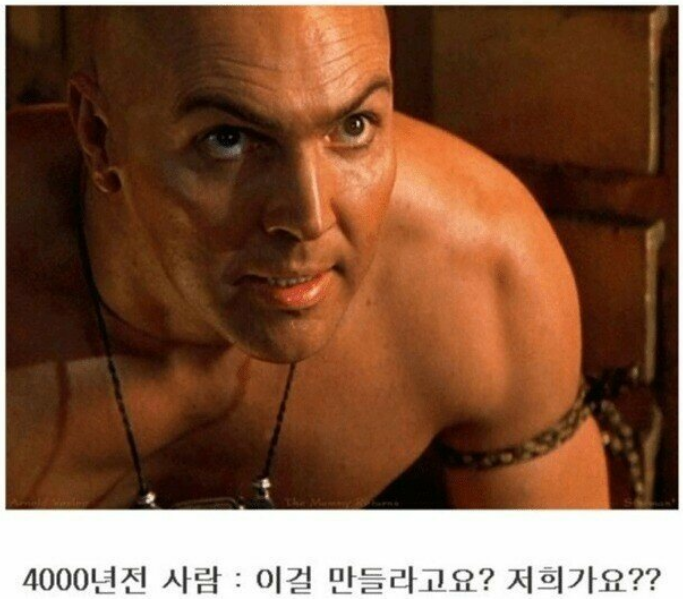
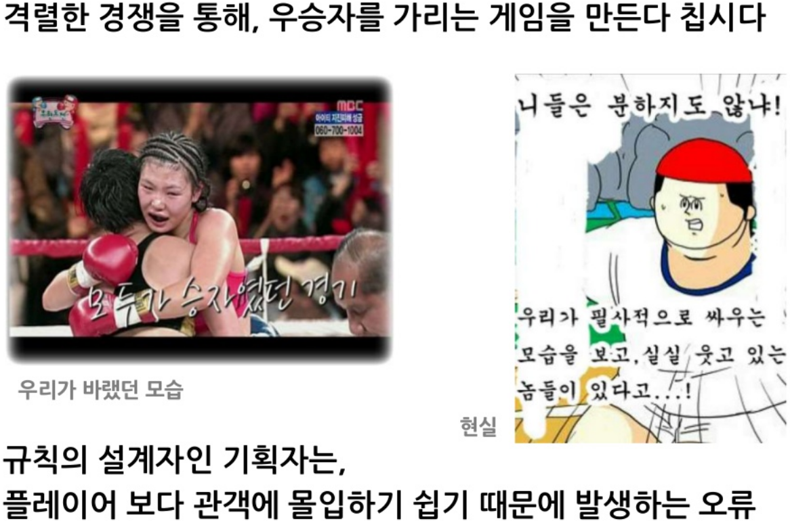

02 · RULE
규칙
가능한 행동과 결과를 정하고
플레이어의 선택을 만듭니다.

장르가 달라도
규칙은 행동을 만듭니다
승리 조건, 이동 방식, 실패 조건이
플레이의 형태를 결정합니다.

규칙은 질문을 만날 때
완성됩니다
간단한 주사위 놀이도
예외 하나마다 새 규칙이 필요합니다.




규칙의 함정
기획자의 의도가 아니라
플레이어가 실제로 하는 행동을 봅니다.


규칙이 많아서가 아니라
예외를 통제할 때 완성됩니다.